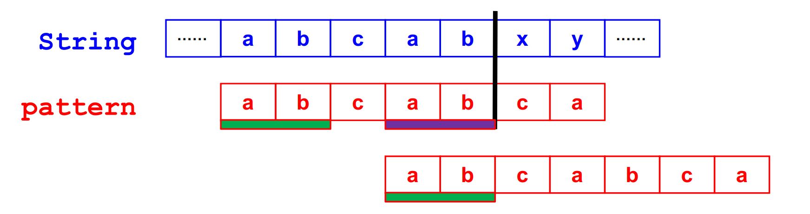
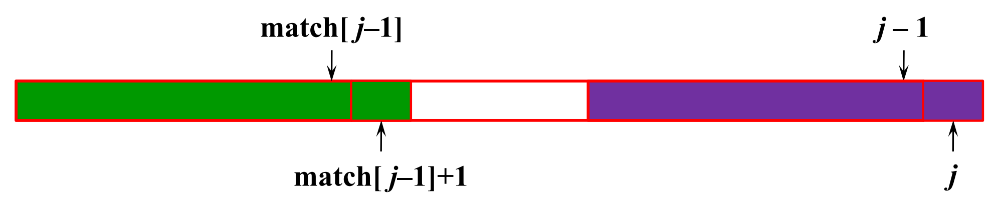
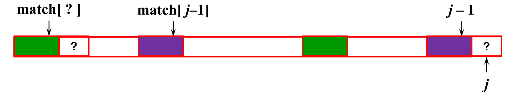

串的模式匹配
问题：给定一段文本串 $string=s_0s_1…s_{n-1}$ 和一个模式 $pattern=p_0p_1…p_{m-1}$，求 $pattern$ 在 $string$ 中出现的位置（通常默认搜索第一次出现的位置）。
朴素算法
也是 C 语言中库函数 strstr() 的实现方法，该算法是朴素的字符串匹配：用两个指针 p、q 分别指向 string 和 pattern，如果第一个字符都匹配不上，p 就往后错一位，直到第一个字符能匹配上，此时 p、q 都往后移动，如果 q 能够一直移动到 pattern 的结尾，说明匹配上了，否则匹配不上，把 p 退回到刚开始的位置，q 退回到 pattern 的开头。之后继续上面的算法。
int strlen(char* s) {
int len = 0;
while (*s) {
len++;
s++;
}
return len;
}
char* strstr(char* string, char* pattern) {
int n = strlen(string), m = strlen(pattern);
int i, j;
for (i = 0; i < n; ++i) {
if (string[i] == pattern[0]) {
for (j = 1; j < m; ++j) {
if (string[i + j] != pattern[j]) {
break;
}
}
if (j == m) {
return string + i;
}
}
}
return NULL;
}时间复杂度 $T=O(mn)$。
KMP 算法
朴素的字符串匹配算法时间复杂度大的原因在于每次匹配时，如果一直匹配了多个字符（不妨设为 x(x ≤ m)），但最后还是失败了，两个指针都要回退 x 位，而 KMP（Knuth、Morris、Pratt）算法通过事先对模式串 pattern 的分析，可以使得指向 string 的指针不需要回退，且指向 pattern 的指针可以一次移动多位，将时间复杂度优化为 $T=O(m+n+T_m)$，其中 $T_m$ 为分析 pattern 所需的时间。
算法具体原理如下图：

在朴素算法中，当 string 中的字符 a 与 pattern 配上后，依次向后配对，直到字符 x 与 c 不匹配后，指向 string 的指针退回到 b，而指向 pattern 的指针退回到 a。
但是我们观察到在 pattern 中，前面的 ab 和后面的 ab 是完全相同的两个子串，因此可以采取直接把 pattern 往后移动 3 位（如图），而指向 string 的指针不变，继续往后匹配即可。这样就可以做到指向 string 的指针永远只往前移动。
注：在实际编程时，不是把 pattern 往前移，而是把指向 pattern 的指针 p 往回移动到指向 c 处（也即下面的 match[p - 1] + 1）。
下面定义一个函数 match（在其他教材中也称为 failure 或 next）：
$$
match(j)=
\begin{cases}
满足p_0\cdots p_i=p_{j-i}\cdots p_j的最大i(<j)\newline
-1 \quad 如果这样的i不存在
\end{cases}
$$
例如：对于 pattern=“abcabcacab”;其每个字符的 match 值如下表：
| pattern | a | b | c | a | b | c | a | c | a | b |
|---|---|---|---|---|---|---|---|---|---|---|
| j | 0 | 1 | 2 | 3 | 4 | 5 | 6 | 7 | 8 | 9 |
| match | -1 | -1 | -1 | 0 | 1 | 2 | 3 | -1 | 0 | 1 |
以 match[6] = 3 为例：最长的匹配子串为 abca（0-3） 和 abca（3-6）。
KMP 算法实现
#define NOTFOUND -1
int kmp(char* string, char* pattern) { //返回下标
int n = strlen(string), m = strlen(pattern);
if (n < m) {
return NOTFOUND; //-1不可能为下标，表示找不到
}
int* match = new int[m];
buildMatch(pattern, match); //初始化match
int s = 0, p = 0;
while (s < n && p < m) {
if (string[s] == pattern[p]) { //能配上
s++;
p++;
}
else if (p > 0) { //前几个字符能配上
p = match[p - 1] + 1; //把p往前移动到match[p-1]处，match[p-1]前面的子串不用再匹配
}
else { //说明第一位都配不上
s++;
}
}
return (p == m) ? (s - m) : NOTFOUND; //如果p==m，说明已经匹配到尾，否则找不到
}这里重要的地方就是 match 函数的定义，以及如何高效的建立 match 表（即 buildMatch 的实现）。
buildMatch 实现
buildMatch 最朴素的想法就是，对于每个 j，依次检查所有可能的子串（即 $p_0\dots p_k$ 和 $p_{j-k}\dots p_j$ ，k 从 0 一直到 j-1，看匹配的最大 k 是多少，该过程复杂度为 $O(j^2)$，因此总的时间复杂度为 $T_m=O(m^3)$，显然时间复杂度太大了，不能接受。
我们观察之前对于字符串 pattern="abcabcacab"建立的 match 表，可以发现，match[j] 不外乎只有两种情况：
match[j] = -1 或 match[j - 1] + 1，如果我们能证明这个猜想（又或是类似的结论），显然可以省去很多时间。

如上图所示，如果 pattern[j] == pattern[match[j - 1] + 1]，显然有 match[j] >= match[j - 1] + 1，下面证明，这种情况下，大于号不可能成立，即只能成立等号。
如果 match[j] = k > match[j - 1] + 1，则有 $p_0\cdots p_k=p_{j-k}\cdots p_j$，那么必有 $p_0\cdots p_{k-1}=p_{j-k}\cdots p_{j-1}$，也即 match[j - 1] >= k - 1 > match[j - 1]，显然矛盾，因此只能有等号成立。
因此，如果 pattern[j] == pattern[match[j - 1] + 1]，有 match[j] = match[j - 1] + 1。
而如果 pattern[j] != pattern[match[j - 1] + 1]，我们已经无法得出 match[j] 与 match[j - 1] 的关系，但是注意到，由于
$p_0\dots p_{match[j-1]}=p_{j-1-match[j-1]} \dots p_{j-1}$，因此一定有 $p_0\dots p_{match[match[j-1]]}=p_{j-1-match[match[j-1]}\dots p_{j-1}$，因此只要继续比较 pattern[match[match[j - 1] + 1] 和 pattern[j] 是否相等即可（即把问题递归地划分成了子问题）。该思想如下图所示：

上图中四段有颜色的子串全部是相同的。显然这样递归地划分下去，由于字符串的长度有限且 match[j] < j，因此一定能够找到出口。
下面是代码：
void buildMatch(char* pattern, int* match) {
int m = strlen(pattern);
match[0] = -1;
for (int j = 1; j < m; ++j) {
int i = match[j - 1]; // 记下 match[j - 1]，省得下标太复杂
while (i >= 0 && pattern[i + 1] != pattern[j]) { // 一直配不上，递归地划分
i = match[i];
}
// 循环退出有两种原因，下面判断一下即可
if (pattern[i + 1] == pattern[j]) {
match[j] = i + 1;
}
else {
match[j] = -1;
}
}
}该算法复杂度似乎为 $T_m=O(m^2)$，因为看似对每个 j，while 循环最坏情况下都能进行 $O(j)$ 次，但是注意到，i 每次回退，减小的值 >= 1，但每次增加，只会增加 1，因此我们有如下重要结论：
在每次 for 循环里，i 回退的总次数不会超过所有for循环 i 增加的总次数。
而由于每次 for 循环，i 最多只增加 1，因此 while 循环执行的次数小于等于 for 循环，我们有 $T_m=O(m)$。